第 12 讲：几何（三）——网格细分、网格简化与阴影映射
从网格的细分与简化，到用阴影贴图在光栅化管线里画出阴影
◆ 学完这一讲，你应该能
能说出网格处理的三大操作（细分、简化、正则化）各自的目的与典型算法
能复述 Loop 细分对新增顶点与旧顶点的更新规则，并解释权重为什么这样取
能说明 Catmull-Clark 细分每一步做了什么，并判断一次细分后奇异点与非四边形面的数量
能解释二次误差度量（QEM）为什么用点到相关三角形平面的平方距离之和，以及边坍缩的贪心流程
能完整描述阴影映射的两趟渲染流程，并说明深度比较为什么会产生自遮挡（shadow acne）
能列举阴影贴图的主要问题（硬阴影、分辨率依赖、浮点比较的 bias/tolerance）
核心结论速记
几何处理三大操作：细分（升采样、增面数）、简化（降采样、保形状）、正则化（面数不变、改分布）
Loop 细分只适用于三角形网格：每个三角形一分为四，新顶点用周围四个旧顶点的加权平均，旧顶点用自身与邻居加权平均
Catmull-Clark 细分适用于一般网格：每个面加面点、每条边加边点、连接所有新点；一次细分后所有面都变成四边形，奇异点（度不为 4）数量不再增加
网格简化用边坍缩，用二次误差度量（QEM）给每条边打分：新顶点位置应使得到所有相关三角形平面的平方距离之和最小
QEM 简化是贪心算法：每次坍缩分数最小的边，坍缩后更新受影响边的分数，直到达到目标面数
阴影映射是图像空间算法：先从光源渲染一张深度图（shadow map），再从相机渲染，把可见点投影回光源比较深度
阴影映射的核心判据：若着色点投影到光源的深度大于 shadow map 中记录的深度，说明被遮挡，处于阴影中
阴影贴图的问题：只能产生硬阴影（点光源）、质量受分辨率限制、浮点深度比较需要 bias/tolerance 来避免自遮挡
011. 网格处理的三类操作：细分、简化、正则化
拿到一个三角形网格，我们经常需要在不改变整体外观的前提下改变它的“采样密度”或“顶点分布”。这一讲开头把网格处理（Geometry Processing）归纳为三类操作：
- 网格细分（Mesh Subdivision / Upsampling）：增加分辨率，也就是增加三角形数量，让模型更光滑、更精细。
- 网格简化（Mesh Simplification / Downsampling）：减少分辨率，在尽量保持形状与外观的前提下减少三角形数量，常用于 LOD（Level of Detail）。
- 网格正则化（Mesh Regularization）：三角形数量不变，但重新分布顶点，让三角形更均匀、质量更好（避免细长三角形）。
这三类操作解决的是不同的问题：细分用于“不够精细”，简化用于“太耗性能”，正则化用于“质量不好”。它们都是对已有网格的再处理，而不是从零建模。
一个直观的类比：细分像把一张低分辨率图片用插值放大；简化像把图片压缩成更小的尺寸但尽量看不出差别；正则化像把图片重新采样成更均匀的像素网格，尺寸不变但每个像素更“方正”。
在工程中，细分常用于离线生成高模或运行时曲面细分（tessellation）；简化常用于生成 LOD 链；正则化常用于改善物理模拟、有限元分析或渲染中的三角形质量。
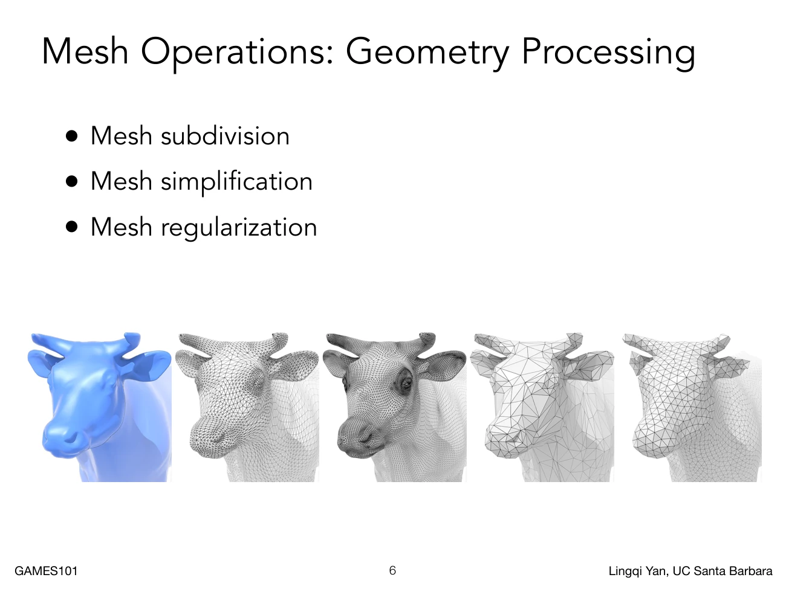
常见坑
把细分和简化当成互逆操作 → 细分后再简化不一定回到原网格，因为细分引入了新的顶点位置，信息已经改变 → 需要保留原始网格或使用可逆的简化策略。
正则化被误认为“改变形状” → 正则化只改顶点分布，不改变三角形数量，形状应尽量保持不变 → 检查正则化后是否出现明显体积变化。
UE / Unity 落地
UE：静态网格体编辑器中有 LOD 生成设置（LOD Group），底层常用简化算法；Nanite 则用虚拟几何体绕过传统 LOD，但离线仍涉及网格处理。
Unity：Mesh 类提供
Mesh.SetTriangles等接口可手动改网格；LOD Group 组件配合 Unity 的 Mesh Simplification 工具生成 LOD。
022. Loop 细分：三角形网格的“一分为四”
Loop 细分（Loop Subdivision）是三角形网格最常用的细分规则。它分两步：
- 增加三角形（顶点）：把每个三角形一分为四——取三条边的中点作为新顶点，连接它们，原来的一个三角形变成四个小三角形。
- 调整顶点位置：新顶点和旧顶点的更新规则不同，这是 Loop 细分的关键。
新顶点的更新：对于一条边上的新顶点，它由这条边的两个端点和相邻两个三角形的对顶点共同决定。课件给出的权重形式是：新顶点位置 = \( \frac{3}{8}(A+B) + \frac{1}{8}(C+D) \)，其中 \(A,B\) 是边的两个端点，\(C,D\) 是共享这条边的两个三角形的对顶点。权重之和为 \( \frac{3}{8}+\frac{3}{8}+\frac{1}{8}+\frac{1}{8}=1 \)，保证仿射不变性。
旧顶点的更新：对于一个度为 \(n\) 的旧顶点（连接 \(n\) 条边），更新公式为： \[ (1 - n u) \cdot \text{original\_position} + u \cdot \sum \text{neighbor\_position} \] 其中 \(u\) 是一个与 \(n\) 有关的权重，常见取法为 \(u = \frac{3}{16}\)（当 \(n=3\) 时）或更一般的 \(u = \frac{3}{8n}\)。课件强调旧顶点“更新方式不同”，因为旧顶点要保留自身信息，同时被邻居拉向平均位置，从而让曲面更光滑。
Loop 细分的结果是：网格越来越密，曲面越来越光滑，极限曲面是 \(C^2\) 连续的（在正则区域）。
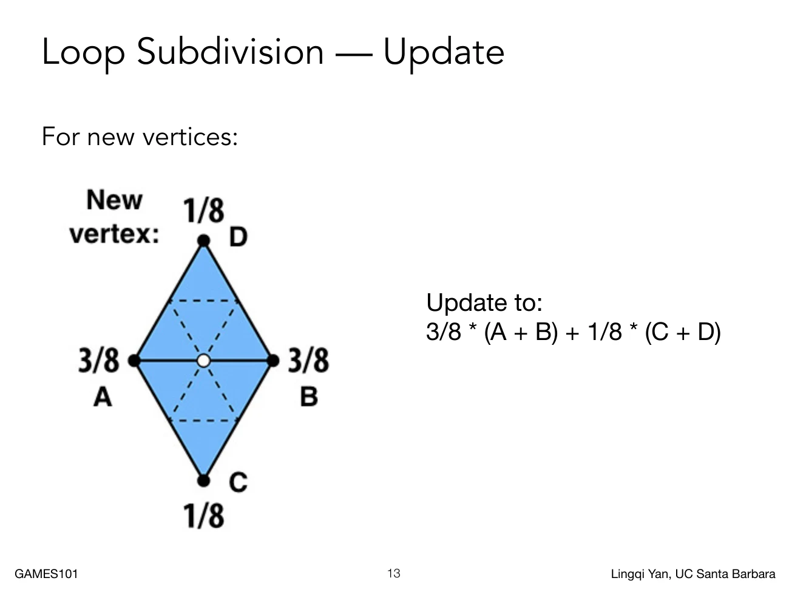
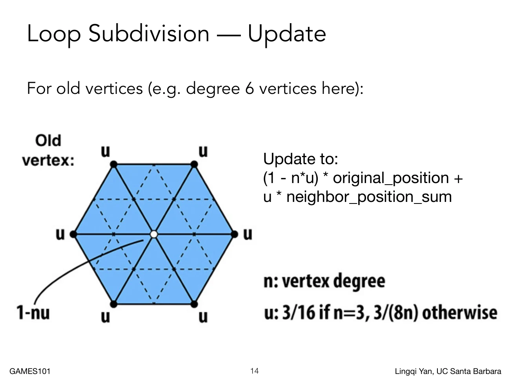
补充说明
课件中 u 的具体取值可能因版本不同，常见为 u = 3/(8n) 或 u = 3/16（n=3 时）。以课件公式为准。
常见坑
新顶点权重写错 → 高光/轮廓出现折痕或凹凸 → 检查权重和是否为 1，且对顶点权重是否为 1/8。
旧顶点更新时把自身也放进邻居求和 → 位置被过度拉向平均，模型收缩 → 公式中邻居求和不应包含自身。
对非三角形网格使用 Loop 细分 → 规则不适用，结果错误 → Loop 只用于三角形网格，一般网格用 Catmull-Clark。
UE / Unity 落地
UE：静态网格体若开启 Tessellation（旧管线）或使用 Nanite 的曲面细分，底层思想与细分类似，但 Loop 细分更多用于离线建模工具。
Unity：Mesh 的顶点/索引数组可手动实现 Loop 细分；Unity 的 ProBuilder 等建模工具也提供细分操作。
Loop 细分新顶点位置的伪代码（cpp）
// A, B: 边的两个端点; C, D: 两个相邻三角形的对顶点
Vec3 newPos = (3.0f/8.0f) * (A + B) + (1.0f/8.0f) * (C + D);
// 旧顶点: n 为度, u 为权重
Vec3 oldPos = (1.0f - n * u) * original + u * neighborSum;033. Catmull-Clark 细分：一般网格的通用规则
Loop 细分只适用于三角形网格，而实际模型常包含四边形、五边形等。Catmull-Clark 细分（Catmull-Clark Subdivision）是更通用的规则，适用于任意多边形网格。
每一步细分做三件事：
- 在每个面内加一个面点（face point）：通常取该面所有顶点的平均。
- 在每条边上加一个边点（edge point）：通常取边的两个端点和相邻两个面点的平均。
- 连接所有新顶点：把每个面点与它所在面的边点连接，把每个边点与相邻的面点连接，形成新的四边形面。
一次细分后，所有面都变成四边形。课件特别强调两个概念：
- 非四边形面（non-quad face）：不是四边形的面。一次细分后，非四边形面全部消失（被拆成四边形）。
- 奇异点（extraordinary vertex）：度不为 4 的顶点。一次细分后，奇异点的数量不再增加，且新产生的顶点都是度为 4 的常规点。
课件中的思考题：一次细分后有多少奇异点？它们的度是多少？非四边形面有多少？答案是：非四边形面变为 0；奇异点数量等于原网格中非四边形面的数量加上原本度不为 4 的顶点（具体数量取决于原网格），且细分后奇异点的度保持不变（原来度为 3 的仍为 3，度为 5 的仍为 5），但不会再产生新的奇异点。
Catmull-Clark 的极限曲面在正则区域是 \(C^2\) 连续的，在奇异点处是 \(C^1\) 连续的。
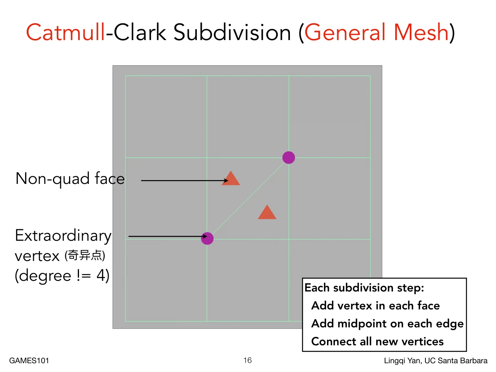
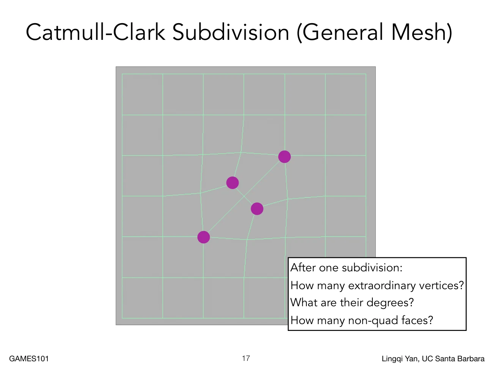
补充说明
课件 P19 给出了四边形网格的 Catmull-Clark 顶点更新规则（面点、边点、顶点点的加权公式），属于“FYI”补充内容，考试一般不要求背具体权重。
常见坑
把 Catmull-Clark 的面点取成面内任意点 → 细分结果不对称、形状扭曲 → 面点应取面所有顶点的平均（质心）。
认为细分后奇异点会增多 → 实际上一次细分后奇异点数量不再增加，新顶点都是度 4 → 检查是否错误地把边点也当成奇异点。
对三角形网格用 Catmull-Clark 后仍期望三角形 → 一次细分后全部变成四边形，三角形网格会被“四边形化”。
UE / Unity 落地
UE：Catmull-Clark 是离线建模工具（如 Maya、Blender）的常用细分曲面算法，UE 导入的静态网格体通常是已经细分好的结果。
Unity：ProBuilder 等建模插件支持 Catmull-Clark 细分；Unity 的 Mesh 类可手动实现面点/边点逻辑。
044. 网格简化与二次误差度量（QEM）
网格简化的目标是：减少三角形数量，同时尽量保持整体形状。最直接的操作是边坍缩（Edge Collapse）：把一条边的两个端点合并成一个新顶点，删掉相邻的退化三角形。
但“合并到哪个位置”很关键。课件指出，简单地对顶点做局部平均（local averaging）效果不好，因为会把形状“拉塌”。更好的做法是用二次误差度量（Quadric Error Metrics, QEM）：新顶点位置应使得到所有“相关三角形平面”的平方距离之和最小。
具体来说，对每个顶点，预先计算一个二次型（quadric）\(Q\)，它编码了该顶点到所有相邻三角形平面的平方距离之和。对于一条边 \((v_1, v_2)\)，坍缩代价是 \( (v_1+v_2)/2 \) 处的二次误差，或者更优地，选择使二次误差最小的点 \( \bar{v} \)，代价为 \( \bar{v}^T (Q_1+Q_2) \bar{v} \)。
简化算法是贪心的：
- 给每条边计算坍缩分数（二次误差）。
- 每次选择分数最小的边进行坍缩。
- 坍缩后更新受影响边的分数。
- 重复直到达到目标面数。
课件提到 Garland & Heckbert 1997 的论文，这是 QEM 简化的经典工作。结果是在相同面数下，QEM 简化比局部平均保留更多形状细节。
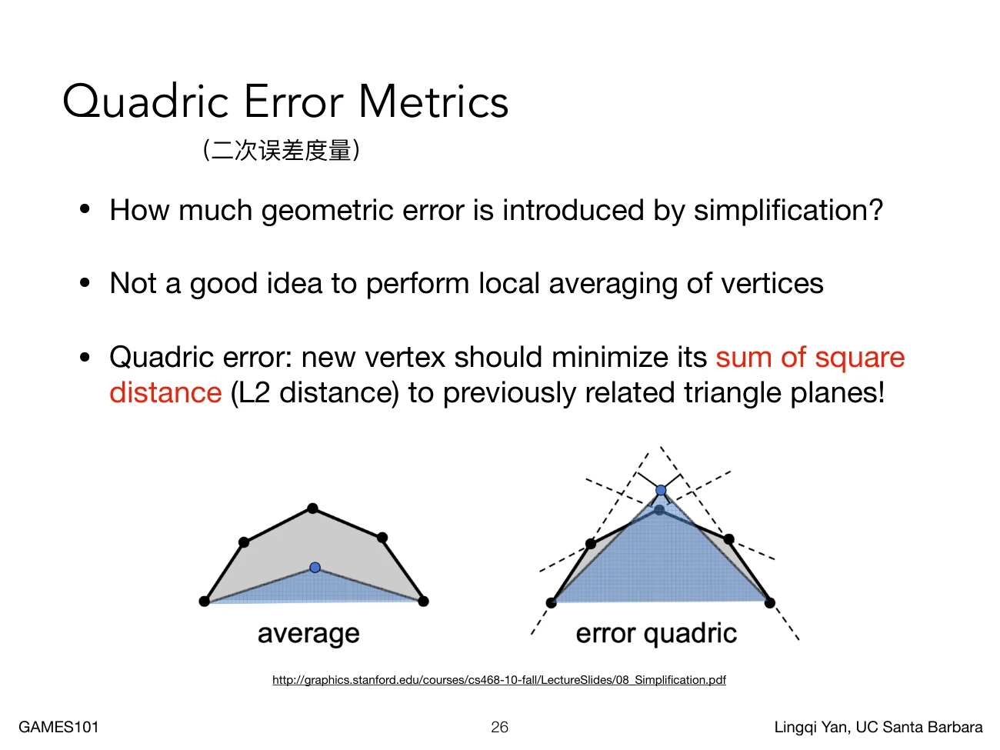
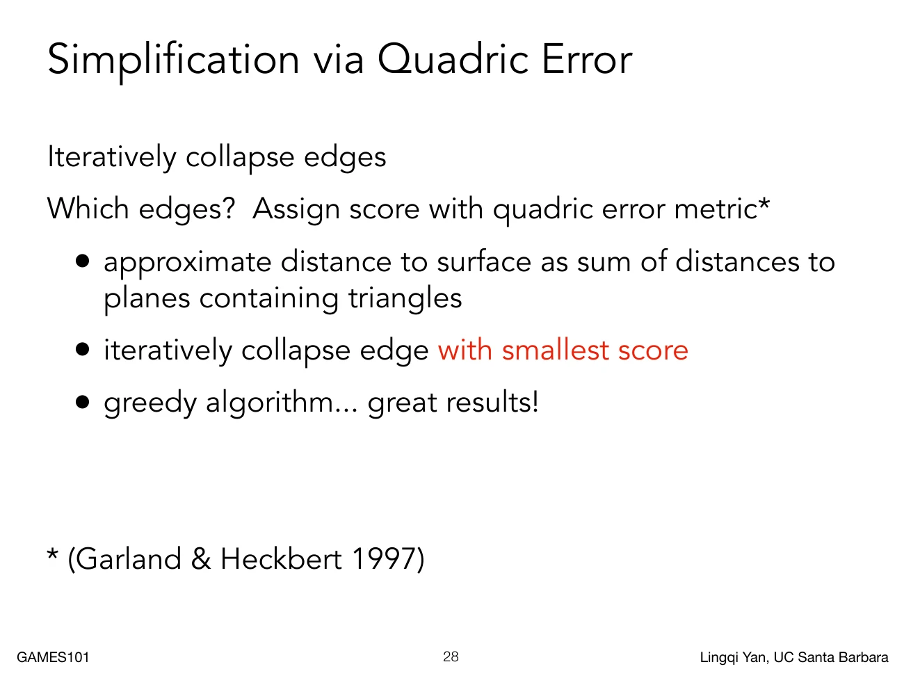
补充说明
QEM 的二次型通常是一个 4x4 对称矩阵，由平面方程 \( ax+by+cz+d=0 \) 的外积 \( pp^T \) 累加得到。
常见坑
用顶点局部平均代替 QEM → 简化后模型明显收缩、细节丢失 → 改用二次误差最小化求新顶点位置。
坍缩后不更新受影响边的分数 → 后续选择基于过时数据，简化质量下降 → 每次坍缩后重新计算相邻边的 QEM 分数。
QEM 矩阵未考虑平面法线方向 → 误差度量各向同性，无法保留尖锐特征 → 二次型应包含平面法线的外积。
UE / Unity 落地
UE：LOD 自动生成使用类似的简化算法；Nanite 的虚拟几何体在离线阶段做聚类与简化。
Unity：Mesh Simplification 工具（如 UnityMeshSimplifier）实现了 QEM 边坍缩；LOD Group 配合使用。
QEM 边坍缩的贪心伪代码（cpp）
for each edge e:
cost[e] = computeQuadricError(e);
while (triangles > target) {
e = edge with min cost;
collapse(e);
for each edge adjacent to e:
cost[edge] = computeQuadricError(edge);
}055. 阴影映射：两趟渲染的深度比较
阴影映射（Shadow Mapping）是光栅化管线中最常用的阴影技术，是一种图像空间算法：它不需要知道场景的几何结构，只靠深度图比较。
核心思想一句话：不在阴影中的点，必须同时被光源和相机看到。
流程分两趟：
第一趟：从光源渲染。把相机放在光源位置，渲染整个场景，只记录深度（不记录颜色），得到一张深度图，称为 shadow map。
第二趟：从相机渲染。正常渲染场景，对每个可见的着色点 \(p\)：
- 把 \(p\) 投影到光源的视图空间，得到它在 shadow map 上的坐标 \((u,v)\) 和深度 \(z_p\)。
- 读取 shadow map 在 \((u,v)\) 处的深度 \(z_s\)。
- 比较：若 \(z_p > z_s + \epsilon\)，说明 \(p\) 到光源的距离比 shadow map 记录的最浅表面更远，即被遮挡，处于阴影中；否则被照亮。
课件用“绿色”标记距离匹配的区域（被照亮），非绿色区域是阴影。
阴影映射的优点是简单、通用、与场景复杂度无关（只与 shadow map 分辨率有关）。缺点是：只能产生硬阴影（点光源）、质量受分辨率限制、浮点深度比较需要 bias/tolerance 来避免自遮挡（shadow acne）。
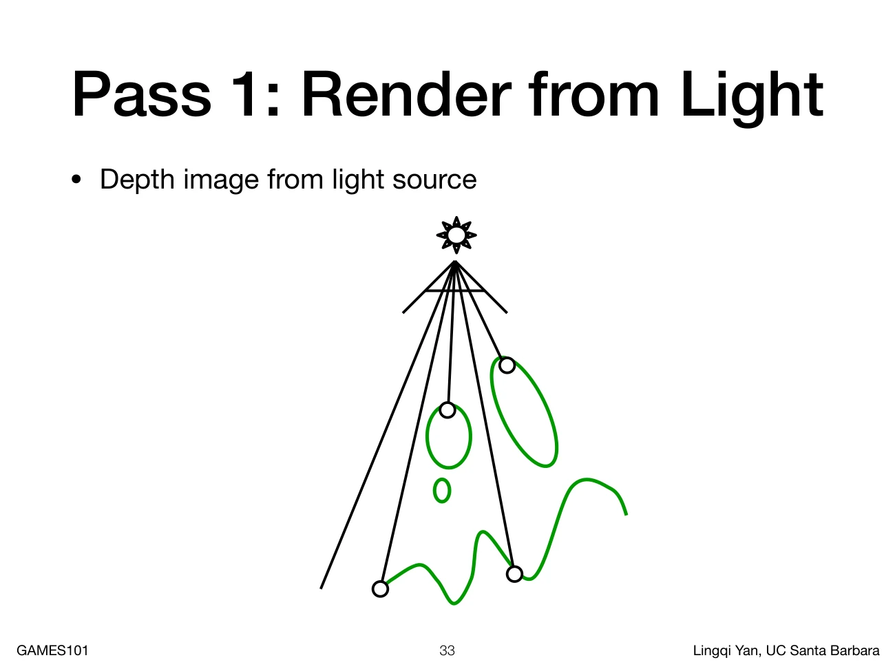
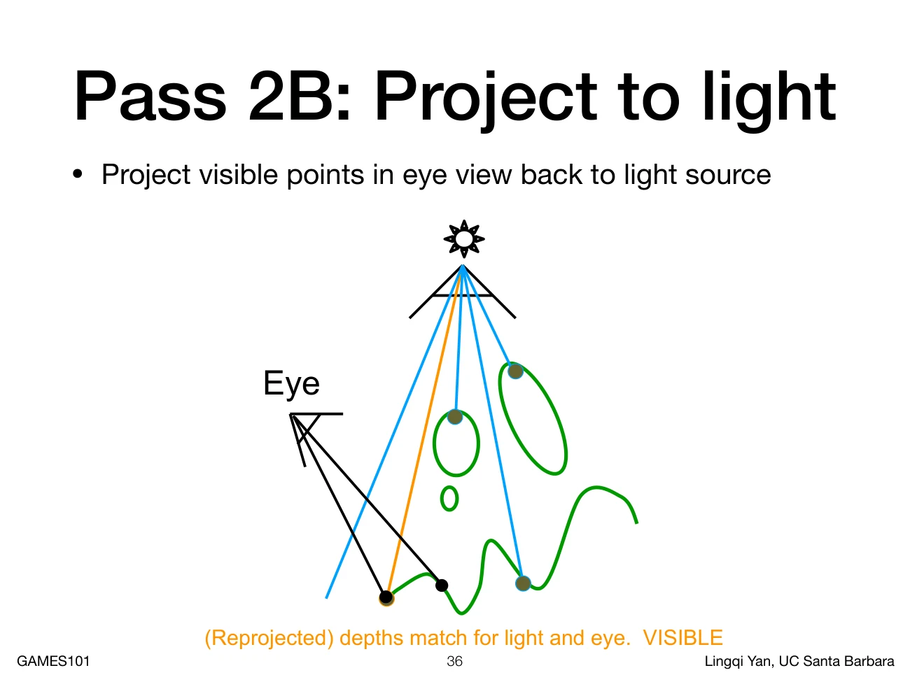
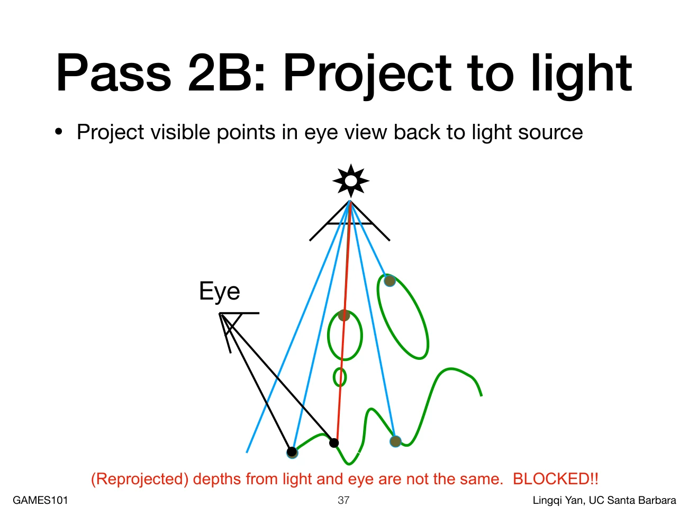
补充说明
课件 P31 强调阴影映射是图像空间算法，不需要场景几何知识，但必须处理走样（aliasing）问题。
常见坑
深度比较没有 bias → 自遮挡（shadow acne），表面出现条纹 → 加一个小的深度偏移（bias）或法线偏移。
shadow map 分辨率太低 → 阴影边缘锯齿严重 → 提高分辨率或使用 PCF/PCSS 软化。
把 shadow map 的深度当成线性深度 → 比较错误 → 注意深度图存储的是投影后的非线性深度，比较时保持一致。
UE / Unity 落地
UE：方向光、点光源、聚光灯都支持阴影贴图；项目设置中有 Shadow Map 分辨率、bias、级联阴影（CSM）等参数。
Unity：Light 组件有 Shadow Type（Hard/Soft）、Shadow Resolution、Bias、Normal Bias 等参数；URP/HDRP 中还有 Shadow Cascade。
阴影映射的核心比较（伪代码）（hlsl）
float4 lightSpacePos = mul(lightViewProj, worldPos);
float2 uv = lightSpacePos.xy / lightSpacePos.w * 0.5 + 0.5;
float z_p = lightSpacePos.z / lightSpacePos.w;
float z_s = shadowMap.Sample(sampler, uv).r;
float shadow = (z_p > z_s + bias) ? 0.0 : 1.0;066. 阴影映射的问题与工程实践
阴影映射虽然简单通用，但有一系列固有问题，课件在最后专门列出：
- 硬阴影（Hard Shadows）：点光源产生的阴影边缘是硬的，没有半影。真实世界中光源有面积，阴影边缘是渐变的（软阴影）。要软阴影需要 PCSS（Percentage-Closer Soft Shadows）或多次采样。
- 质量依赖 shadow map 分辨率：这是所有图像空间技术的通病。分辨率低则锯齿明显，分辨率高则内存和带宽开销大。
- 浮点深度比较的 scale、bias、tolerance 问题：深度值是非线性的，远处精度低，容易产生自遮挡（shadow acne）或漏光（peter-panning）。需要仔细调 bias 和 normal bias。
课件还展示了从光源视角看场景、看深度图、以及比较距离的可视化，帮助理解“绿色区域是距离匹配的地方”。
在工程中，阴影映射通常与级联阴影（Cascaded Shadow Maps, CSM）结合，为远近不同的区域使用不同分辨率的 shadow map；点光源用立方体 shadow map（6 张）；聚光灯用单张。软阴影则用 PCF（Percentage-Closer Filtering）在比较时做多次采样平均。
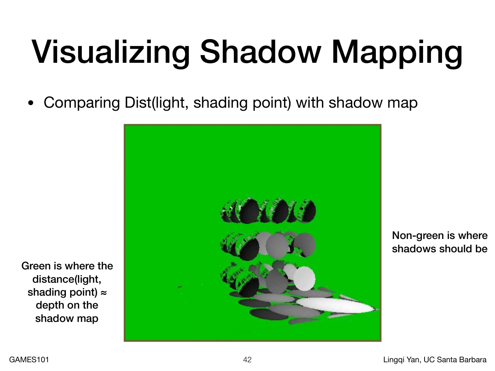
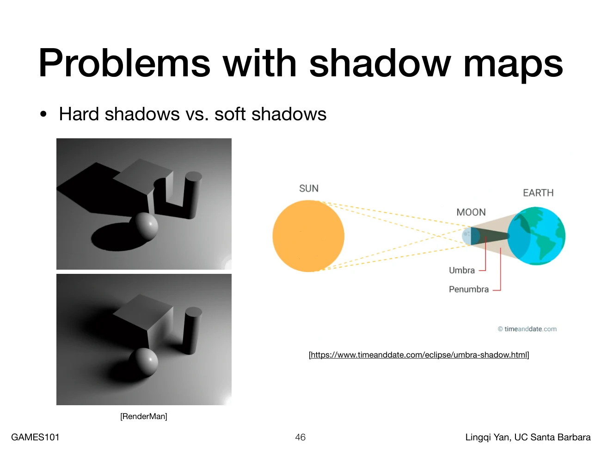
补充说明
课件最后提到课程路线图：光栅化、几何、光线追踪、动画/模拟，阴影映射属于光栅化管线中的效果。
常见坑
bias 调得太大 → 阴影与物体分离（peter-panning），看起来像漂浮 → 减小 bias 或改用 normal bias。
bias 调得太小 → 自遮挡条纹（shadow acne）→ 适当增大 bias 或提高 shadow map 分辨率。
只用一个 shadow map 覆盖整个场景 → 远处阴影分辨率不足 → 使用级联阴影（CSM）按距离分级。
UE / Unity 落地
UE：项目设置 → Rendering → Shadows 中有 Shadow Map Method（Shadow Maps / Virtual Shadow Maps）、CSM 级联数量、bias 等；Nanite + Lumen 下虚拟阴影贴图（VSM）是默认方案。
Unity：URP/HDRP 的 Light 组件有 Shadow Resolution、Bias、Normal Bias、Soft Shadows 开关；HDRP 还支持 Contact Shadows。
引擎对照表
| 概念 / 效果 | Unreal Engine | Unity |
|---|---|---|
网格细分 | 静态网格体编辑器中的 Tessellation（旧管线）或 Nanite 曲面细分；离线建模工具常用 Catmull-Clark | ProBuilder 细分；Mesh API 手动实现 Loop/Catmull-Clark |
网格简化 / LOD | LOD Group 自动生成；Nanite 虚拟几何体 | LOD Group + Mesh Simplification 工具（QEM） |
阴影映射 | 光源的 Shadow Map；项目设置中的 Shadow Map Method、CSM、VSM | Light 组件的 Shadow Type / Resolution / Bias；URP/HDRP 阴影设置 |
软阴影 | PCSS、Virtual Shadow Maps 的软阴影 | Soft Shadows 开关；HDRP 的 PCSS |
阴影 bias | 光源或项目设置中的 Shadow Bias、Normal Bias | Light 组件的 Bias、Normal Bias |
术语双语表
| English | 中文 | 说明 |
|---|---|---|
| Mesh Subdivision | 网格细分 | 增加网格分辨率，使模型更光滑 |
| Mesh Simplification | 网格简化 | 减少三角形数量，尽量保持形状 |
| Mesh Regularization | 网格正则化 | 三角形数量不变，重新分布顶点以提高质量 |
| Loop Subdivision | Loop 细分 | 三角形网格的细分规则，一分为四并加权更新顶点 |
| Catmull-Clark Subdivision | Catmull-Clark 细分 | 一般网格的细分规则，加面点、边点后连接成四边形 |
| Extraordinary Vertex | 奇异点 | 度不为 4 的顶点，细分后数量不再增加 |
| Quadric Error Metrics (QEM) | 二次误差度量 | 用点到相关三角形平面的平方距离之和衡量简化误差 |
| Edge Collapse | 边坍缩 | 把一条边的两个端点合并，简化网格的基本操作 |
| Shadow Mapping | 阴影映射 | 从光源渲染深度图，再从相机比较深度判断阴影 |
| Shadow Acne | 自遮挡 | 深度比较精度问题导致表面出现条纹状阴影 |
课后练习
01 Loop 细分中，一个新顶点的位置由哪四个顶点决定？权重分别是多少？
查看答案
提示：
边的两个端点 + 两个相邻三角形的对顶点
由边的两个端点 A、B 和共享这条边的两个三角形的对顶点 C、D 决定。新顶点位置 = (3/8)(A+B) + (1/8)(C+D)。权重之和为 1。
02 Catmull-Clark 细分一次后，非四边形面的数量是多少？奇异点的数量会如何变化？
查看答案
提示：
每个面被拆成四边形
一次细分后，所有面都变成四边形，非四边形面数量为 0。奇异点（度不为 4 的顶点）数量不再增加：原来度不为 4 的顶点仍为奇异点，度保持不变；新产生的顶点都是度为 4 的常规点。
03 简述基于二次误差度量（QEM）的网格简化流程。为什么不用简单的顶点平均？
查看答案
提示：
贪心 + 边坍缩 + 二次误差
流程：为每条边计算坍缩代价（二次误差），每次贪心选择代价最小的边进行坍缩，坍缩后更新受影响边的代价，重复直到达到目标面数。不用简单平均是因为局部平均会把顶点拉向邻居中心，导致模型收缩、细节丢失；QEM 通过最小化到相关三角形平面的平方距离之和，能更好地保持形状。
04 描述阴影映射的两趟渲染流程，并说明如何判断一个点是否在阴影中。
查看答案
提示：
第一趟从光源，第二趟从相机
第一趟：从光源位置渲染场景，只记录深度，得到 shadow map。第二趟：从相机渲染，对每个可见着色点 p，将其投影到光源空间得到坐标 (u,v) 和深度 z_p；读取 shadow map 在 (u,v) 处的深度 z_s；若 z_p > z_s + bias，则 p 被遮挡，处于阴影中；否则被照亮。
05 在 UE 或 Unity 中，阴影出现条纹状自遮挡（shadow acne），可能的原因是什么？如何调整？
查看答案
提示：
bias 太小或分辨率不足
原因是深度比较时 bias 太小，浮点精度导致表面自身被误判为遮挡。解决方法：适当增大 Shadow Bias 或 Normal Bias；提高 shadow map 分辨率；使用级联阴影或虚拟阴影贴图。注意 bias 过大会导致 peter-panning（阴影与物体分离）。